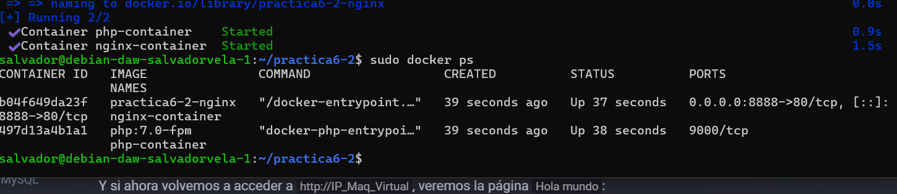
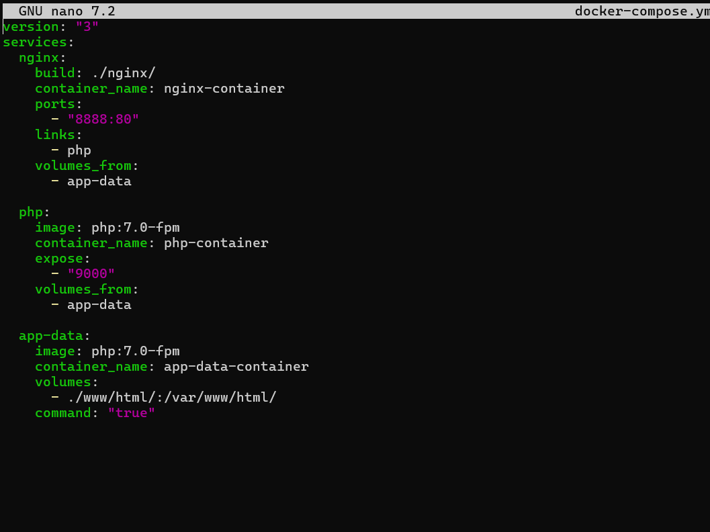

Práctica 6.2 - Despliegue de una aplicación PHP con Nginx y MySQL usando Docker y docker-compose
Instalación de docker-compose
Proceso de dockerización de Nginx+PHP+MySQL
1. Estructura de directorios
La estructura de directorios que debe quedar es esta:
/usuario/home/practica6-2/
├── docker-compose.yml
├── nginx
│ ├── default.conf
│ └── Dockerfile
├── php
│ └── Dockerfile
└── www
└── html
└── index.php
Se pueden ir crrando los directorios y los archivos segun se este haciendo la practica o todo a la vez, con comandos como estos:
mkdir practica6-2
cd practica6-2
touch docker-compose.yml
mkdir nginx
touch nginx/default.conf
...
2. Creación de un contenedor Nginx
Para empezar, necesitamos crear y correr un contenedor Nginx que permita alojar nuestra aplicación en PHP.
Dentro de la carpeta /usuario/home/practica6-2/ debemos haber creado o crear ahora el archivo docker-compose.yml.
Y editamos este archivo
nano docker-compose.yml
Y añadimos las siguientes líneas:

Y lo guardamos.
Despues ejecuutaremos lo siguiente:
docker-compose up -d
Con la opción -d estamos indicando que el contenedor se ejecute en background o segundo plano.
Para comprobar que el contenedor esta activo usamos lo siguiente:
docker ps

Una vez hecho esto si nos vamos al navegador y ponemos la IP de nuestra maquina virtual y el puerto que hemos configurado (http://IP:PUERTO) nos saldra los siguiente:
3. Creación de un contenedor PHP
Creamos la carpeta y el documento dentro de ella, si no se había hecho antes:
mkdir -p /home/usuario/practica6-2/www/html
nano /home/usuario/practica6-2/www/html/index.php

Y dentro de index.php añadimos el siguiente código:
Se guarda el archivo y crea, si no estaba creado, un directorio llamado nginx dentro del directorio del proyecto:
mkdir /home/usuario/practica6-2/nginx
Crearamos el archivo de configuración por defecto para que Nginx pueda correr la aplicación PHP:
nano /home/usuario/practica6-2/nginx/default.conf

Y dentro de ese archivo, colocaremos la siguiente configuración:
Codigo completo:
server {
listen 80 default_server;
root /var/www/html;
index index.html index.php;
charset utf-8;
location / {
try_files $uri $uri/ /index.php?$query_string;
}
location = /favicon.ico { access_log off; log_not_found off; }
location = /robots.txt { access_log off; log_not_found off; }
access_log off;
error_log /var/log/nginx/error.log error;
sendfile off;
client_max_body_size 100m;
location ~ .php$ {
fastcgi_split_path_info ^(.+.php)(/.+)$;
fastcgi_pass php:9000;
fastcgi_index index.php;
include fastcgi_params;
fastcgi_param SCRIPT_FILENAME $document_root$fastcgi_script_name;
fastcgi_intercept_errors off;
fastcgi_buffer_size 16k;
fastcgi_buffers 4 16k;
}
location ~ /.ht {
deny all;
}
}
Guardamos el archivo y ahora creamos el Dockerfile dentro del directorio nginx
nano /home/usuario/practica6-2/nginx/Dockerfile

Y dentro de este archivo:
Y ahora editamos nuestro archivo docker-compose.yml:

Así pues, ejecutaremos el nuevo contenedor volviendo a ejecutar compose. Se debe ejecutar el comando en el mismo directorio donde tengamos nuestro archivo docker-compose.yml:
cd /home/usuario/practica6-2
docker-compose up -d
Y comprobamos que los contenedores están corriendo:
docker ps
Se debe de ver algo similar a esto:
CONTAINER ID IMAGE COMMAND CREATED STATUS PORTS NAMES
82c8baf15221 docker-project_nginx "/docker-entrypoint.…" 23 seconds ago Up 22 seconds 0.0.0.0:80->80/tcp, :::80->80/tcp nginx-container
10778c6686d8 php:7.0-fpm "docker-php-entrypoi…" 25 seconds ago Up 23 seconds 9000/tcp php-container

Y si ahora volvemos a acceder a la ip de la maquina virtual desde el navegador, veremos la página Hola mundo.
4. Creación de un contenedor para datos
En este paso crearemos un contenedor independiente que se encargará de contener los datos y lo enlazaremos con el resto de contenedores.
Para hacer esto, volvemos a editar el docker-compose.yml:
nano /usuario/home/practica6-2/docker-compose.yml
Y añadiremos un nuevo servicio a los que ya teníamos, quedando así:

Así que para recrear y lanzar todos los contenedores ejecutamos de nuevo dentro del directorio donde se encuentra el archivo:
docker-compose up -d
Y volvemos a verificar que están corriendo todos:
docker ps -a
Debiendo ver algo como:
CONTAINER ID IMAGE COMMAND CREATED STATUS PORTS NAMES
849315c7ffc0 docker-project_nginx "/docker-entrypoint.…" 27 seconds ago Up 25 seconds 0.0.0.0:80->80/tcp, :::80->80/tcp nginx-container
59a0d7040fd8 php:7.0-fpm "docker-php-entrypoi…" 28 seconds ago Up 27 seconds 9000/tcp php-container
fbca95944234 php:7.0-fpm "docker-php-entrypoi…" 29 seconds ago Exited (0) 28 seconds ago app-data-container
5. Creación de un contenedor MySQL
En esta sección crearemos un contenedor de una base de datos MySQL y lo enlazaremos con el resto de contenedores.
Primero, modificaremos la imagen PHP e instalaremos la extensión PHP para MySQL
Creamos, si no lo teníamos ya, nuestro directorio php y dentro de él, el archivo Dockerfile:
mkdir /home/usuario/practica6-2/php
nano /home/usuario/practica6-2/php/Dockerfile

Y dentro del Dockerfile ponemos:
Y una vez más, debemos editar docker-compose.yml con el objetivo de que se creen el contenedor para MySQL y el contenedor de los datos de MySQL que contendrá la base de datos y las tablas:
Después de guardar este archivo, editamos el archivo index.php y hacemos algunos cambios para comprobar la conexión a la base de datos.
El archivo index.php debe quedar así:
Se Guarda el archivo y se lanzan los contenedores una vez más:
docker-compose up -d
Y verificamos que están ejecutándose:
docker ps -a
Y veremos:
CONTAINER ID IMAGE COMMAND CREATED STATUS PORTS NAMES
d3e82747fe0d mysql:5.7 "docker-entrypoint.s…" 39 seconds ago Up 38 seconds 3306/tcp, 33060/tcp mysql-container
606320e5a7f8 mysql:5.7 "docker-entrypoint.s…" 41 seconds ago Exited (0) 39 seconds ago mysql-data-container
ca4f63797d11 docker-project_php "docker-php-entrypoi…" 2 hours ago Up 2 hours 9000/tcp php-container
849315c7ffc0 docker-project_nginx "/docker-entrypoint.…" 2 hours ago Up 2 hours 0.0.0.0:80->80/tcp, :::80->80/tcp nginx-container
fbca95944234 php:7.0-fpm "docker-php-entrypoi…" 2 hours ago Exited (0) 39 seconds ago app-data-container
6. Verificación de conexión a la base de datos
Si ahora accedemos a la ip de la maquina virtual desde el navegador como hemos hecho antes, deberíamos obtener la siguiente pantalla:

nos dice que no tenemos ninguna tabla en la base de datos mydb.
Eso es debido a que tenemos que cambiar la variable $root y la variable $password del index.php
Es decir:
nano /home/usuario/www/html/index.php
Y cambiar las líneas:
$user = "root";
$password = "secret";
Una vez hecho esto nos dara este resultado: